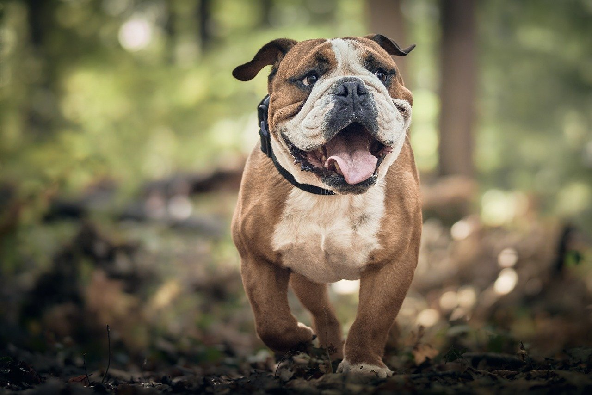
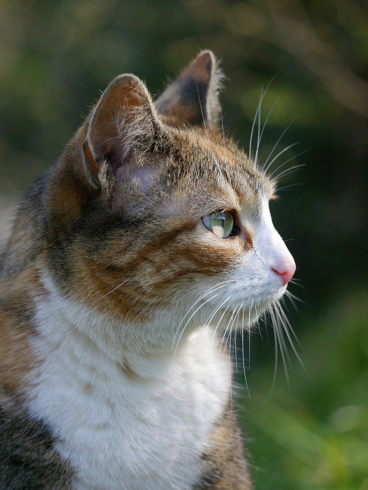

Cão-teúdo para todos os gostos!
Seja bem-vindo ao Blog Patinhas, um espaço dedicado aos apaixonados por animais! Aqui você encontra notícias, dicas de cuidado, histórias inspiradoras e muito mais sobre o universo peludo.
Nesta edição:
-
Adote um amigo: Conheça a história de Max, um cãozinho que busca um lar cheio de amor.
Max é um cãozinho de 3 anos, cheio de energia e amor para dar. Ele foi resgatado das ruas e está ansioso para encontrar um lar definitivo. Max se dá bem com outros animais e crianças, e adora brincar e passear.
 -
Cuidados no verão: Dicas para manter seu pet fresco e saudável durante a estação mais quente do ano.
O verão é uma época de alegria e diversão, mas também é importante tomar alguns cuidados para manter seu pet fresco e saudável. Aqui estão algumas dicas:
- Ofereça água fresca e limpa à vontade.
- Mantenha seu pet em um local fresco e ventilado.
- Evite passear com seu pet nos horários mais quentes do dia.
- Passe protetor solar nas áreas mais sensíveis do corpo do seu pet.
-
Comportamento animal: Entenda por que seu gato arranha os móveis e saiba como lidar com esse comportamento.
Os gatos arranham os móveis por diversos motivos, como para marcar território, afiar suas garras, aliviar o estresse ou simplesmente se divertir. Se você está tendo problemas com seu gato arranhando os móveis, aqui estão algumas dicas para lidar com esse comportamento:
- Forneça ao seu gato um arranhador adequado.
- Mantenha as unhas do seu gato aparadas.
- Ensine seu gato a usar o arranhador.
- Evite punir seu gato por arranhar os móveis.
-
Receitas deliciosas: Prepare petiscos saborosos e nutritivos para seu pet.
Aqui estão algumas receitas de petiscos saborosos e nutritivos que você pode preparar para seu pet:
- Biscoitos de banana e aveia
- Petiscos de carne congelada
- Sorvete de frutas para cães
- Delícia de melão com banana Para essa receita, separe duas bananas,
Ingredientes:
1 banana nanica madura, sem casca
1 ovo
50g de manteiga sem sal ou óleo de coco
2 colheres de sopa de mel
1 xícara de aveia em flocos
1 colher de chá de canela em pó
aproximadamente 2 xícaras farinha de aveia integral ou de quinoa ou polvilho doce: o suficiente para “dar o ponto” na massa
Modo de preparar:
Misture todos os ingredientes, com exceção da farinha, até obter uma massa homogênea.
Vá aos poucos adicionando farinha até a massa não grudar mais nas mãos.
Abra a massa com um rolo, corte no formato desejado com cortadores de biscoito e leve ao forno para assar em fogo médio ou baixo por aproximadamente 10 minutos
ou até os biscoitos ficarem dourados e sequinhos. Armazene em recipiente tampado e consuma em até 10 dias. Ofereça ao seu peludo com moderação.Ingredientes:
150g de carne cozida picada e sem tempero algum
100g de flocos de aveia
100g de farinha integral
1 ovo
Recipiente para micro-ondas
Modo de preparo
Quebre o ovo em uma tigela e em seguida misture os demais ingredientes,
com exceção da farinha Misture até que fique uma massa homogênea e maleável,
colocando a farinha aos poucos até que não grude mais Corte pequenas porções, formando biscoitinhos, como bolachinhas
Coloque em um recipiente que possa ir ao micro-ondas e deixe por seis minutos em potência média.
Depois desse processo, retire do forno micro-ondas e espere esfriar.
Coloque em sacos plásticos ou potes herméticos para armazenamento. Você também pode congelar para manter a crocância.Ingredientes:
uma caixa de morangos,
duas bananas,
meio copo de leite de arroz,
biscoitos para cães,
forma para sorvete e um petisco tipo palito.
Modo de preparo:
Pique as frutas, coloque-as no liquidificador
e acrescente o leite de arroz.
Bata até conseguir uma mistura homogênea.
Em seguida, quebre os biscoitos em pedaços e acrescente-os em cima da mistura na forma.
Complete com o restante da mistura e leve ao congelador.
Os petiscos imitam os palitos de picolés.
uma fatia de melão,
uma maçã,
água de coco,
forma de sorvete
petiscos de palito para imitar picolés.
Modo de prepraro:
Você só precisa picar as frutas,
colocá-las no liquidificador e bater até conseguir uma mistura consistente.
Acrescente a água de coco e coloque tudo na forma, junto do petisco de palito.
Espere congelar para servir ao seu cachorrinho.
Ajude a ONG SOS Patinhas a ajudar!
Doe qualquer valor